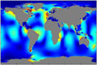
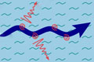
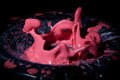

Research interests
-

Ocean tides
The most recent work on constructing a numerical model of
global tides is described here. Our new model will be used to explore
tidal regimes of the past and future and their climatological
implications.
Continue Reading �
-
Thin film flows
The dynamics of thin films with a free surface flows is conventionally
described with the lubricationy approximation. However, in many cases
its long-wave assumption is invalid and so are its predictions.
Continue Reading �
-

Resonant over-reflection
Scattering of large-scale waves by surface currents in the ocean is
explored in my Ph.D. thesis . Occurrence of resonant over-reflection is
connected to radiating instabilities and spontaneous emission of waves.
Continue Reading �
-

Non-Newtonian fluids
In my master thesis stability of the plane flows of non-Newtonian
fluids (e.g. soil, slurries) was investigated. The stationary
scattering theory and some integral estimates was proposed to prove the
linear stability.
Continue Reading �